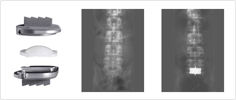

It is hard to regeneratea severely damaged disc. So spondylodesis or artificial disc surgery is performed to fix the zone. This surgery removesthe damaged disc and replaces it with an artificial disc. Patients can return to their normal daily activities after the surgery.
